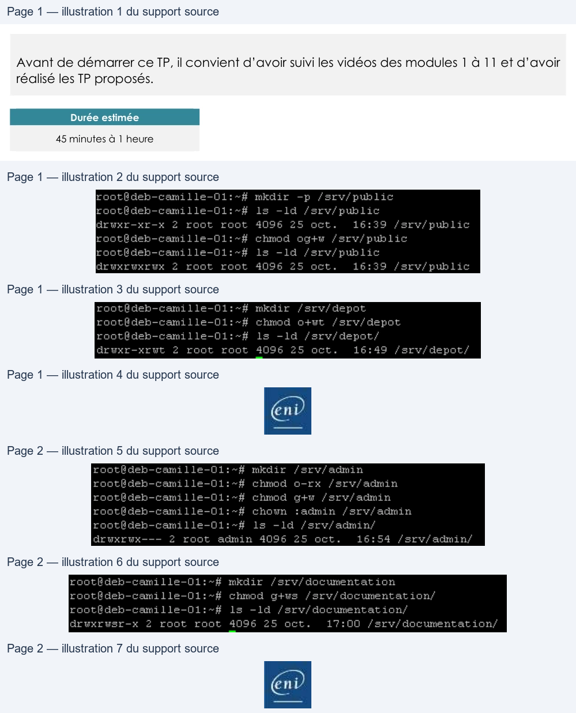

Transcription du document du Drive TSSR. La mise en forme est adaptée au Web ; les compléments IA du portail sont présentés séparément.
Administration Debian GNU/Linux
TP du Module 11 – Droits sur les fichiers et répertoires
Avant de démarrer ce TP, il convient d’avoir suivi les vidéos des modules 1 à 11 et d’avoir
réalisé les TP proposés.
Durée estimée
45 minutes à 1 heure
Créer une structure de stockage sur le serveur sans interface
graphique pour les fichiers utilisateurs.
Trouver les solutions pour les besoins suivants :
•
Public : un répertoire public accessible en lecture / écriture pour tous les utilisateurs
Création de la structure de stockage dans le dossier /srv (Données des services hebergées, par exemple unh
serveur de fichier).
Ajout du droit d’écriture à others .
•
Dépôt : un répertoire depot accessible en lecture / écriture pour tous les utilisateurs
mais dans lequel seul le propriétaire du fichier pourra le supprimer
Création du dossier sans l'option -p, devenu inutile maintenant que /srv existe
ajout du droit w à others ainsi que du droit t , le sticky bit, qui interdit la suppression par d’autres comptes
que l’utilisateur propriétaire ou root
Page 1/2
© ENI – Tous droits réservés
SC
roothdeb-camille-Ol:~# mkdir
-p fsrv/public
roottdeb-camille-Ol:~#
ls -ld /srv/public
drwxr-xr-x
2
root root
4096
25 oct.
16:39 /srv/public
rootédeb-camille-01:-#
chmod ogtw /sryv/public
roottdeb-camille-Oi:~#
ls -ld /srv/public
arWAHOWKEWH
2
root root
4096
25 oct.
16:39 /srv/public
rootWdeb-camille-Oi:~-# mkdir /srv/depat
rootideb-camille-Ol:-#
chmod
o+twt /srv/depot
rootdeb-camille-Ol:~#
ls -ld /srv/depot/
drwxc-xewt
2
root root 4096 25 oct.
16:49 /srv/depot/
Administration Debian GNU/Linux
•
Admin : un répertoire admin accessible en lecture / écriture pour le groupe admin
uniquement
Suppression de tous les droits pour others
ajout du droit d’écriture pour le groupe propriétaire
Affection du groupe admin comme groupe propriétaire
•
Documentation : un répertoire documentation accessible en lecture pour tous les
utilisateurs et en lecture/écriture pour le groupe documentation.
Faire en sorte que tout nouveau fichier créé dans ce répertoire appartienne au
groupe documentation
Ajout du droit d'écriture pour le groupe ainsi que du droit s qui active le SetGID .
Page 2/2
© ENI – Tous droits réservés
rootideh-cemille-0i:-# mkdir
/srv/admin
rootédeh-camille-01:-#
chmod o-rx
/secv/admin
rootdeb-camille-O1l:~#
chmod gtw /srv/admin
rootédeh-camille-01:-#
chown
:admin fsrv/admin
rootédeh-camille-01:-#
ls
-ld /srv/ admin;
arwxrowx---
2
root
admin 4096
25
oct.
16:54 /arv/admin/
rootldeb-camille-O1:-# mkdir
/srv/documentation
rootédeb-camille-01:-#
chmod gtws
/srv/ documentation’
rootédeh-camille-01!:-#
ls
-ld /arv/ documentation;
drwerwsr-x
2
root root
4096
25
oct.
17:00
/srev/ documentation;
